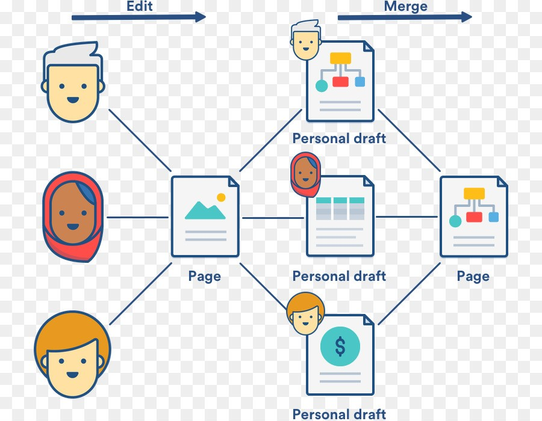

Índice
-
Un mundo conectado
-
Tecnologías de la información y la comunicación
Las TIC engloban dispositivos y aplicaciones y son herramientas que permiten gestionar la información y realizar tareas mediante dispositivos con acceso a internet como móviles, ordenadores, que permiten intercambiar información.
-
El Internet de las cosas (IoT)
IoT hace referencia a la interconexión entre los objetos e internet.
Su objetivo es permitir la máxima conectividad entre los objetos para incrementar sus aplicaciones y convertirlos en objetos inteligentes, basándose en el intercambio de información en red sin necesidad de intervención.
-
-
La red Internet
-
Servicios de internet
A través de la red, es posible encontrar información sobre cualquier tema a través de diversos formatos sin diferencias sociales mediante servicios como la World Wide Web (WWW), el correo electrónico, telefonía VoIP (voz sobre IP), mensajería instantánea (WhatsApp, Telegram, etc.), almacenamiento en la nube o redes sociales.
-
Familia de protocolos TCP/IP
Un protocolo de comunicación se basa en un conjunto de reglas normalizadas que permite a dos o más dispositivos comunicarse entre ellos para compartir información.
Más sobre el protocolo TCP/IP -
Versiones del protocolo IP
- IPv4
Es la primera versión del protocolo IP (1981). Es una cadena de dígitos de 32 bits que permite hasta 2^32 dispositivos. Actualmente se ha superado el límite de direcciones IPv4. Las direcciones están formadas por 4 números del 0 al 255 separados por un punto.
- IPv6
Es la cuarta versión del protocolo IP. Es una cadena de dígitos de 128 bits que permite hasta 2^128 dispositivos con direcciones formadas por 8 números en hexadecimal desde el 0 al ffff separados por dos puntos. Esta versión permite un número casi ilimitado de direcciones.
- IPv4
-
-
Trabajo colaborativo en la Web 2.0
-
Evolución de la Web
La World Wide Web (WWW), es un sistema de páginas disponible en internet e interconectadas mediante enlaces de hipertexto (HTML). Se distinguen varias versiones:
Versión Web Características Clave Ventajas Desventajas Año 1.0 o Estática Webs estáticas, hipervínculos simples
Facilidad de creación, ampliamente adoptado
Contenido no interactivo, diseño rudimentario, modificable solo por los creadores
Principios 1990
2.0 o Social Introducción de CSS, mayor control de diseño
Diseño mas limpio, web dinámica y colaborativa
Mayor interacción y adaptabilidad, curva alta de aprendizaje
Principios 2000
3.0 o Semántica Introducción de JavaScript, interactividad mejorada, relación de datos semánticos
Mayor dinamismo, formularios más avanzados, acceso eficiente a la información
Riesgo de vulnerabilidades de seguridad, problemas de rendimiento
2000-2003
4.0 o Total Tecnologías avanzadas como HTML5 y CSS3
Multimedia integrada, aplicaciones web ricas en funcionalidad
Requerimientos de hardware y ancho de banda, complejidad en el desarrollo
2006-Actualidad
-
Trabajo colaborativo en entornos virtuales y elementos que lo posibilitan
Se basa en la intervención de personas que comparten ideas y conocimientos para alcanzar una meta común.
La Web 2.0 e internet permiten la colaboración surgiendo proyectos como Linux o Wikipedia.
La evolución de los entornos virtuales de aprendizaje está muy condicionada por el desarrollo tecnológico pero también por los cambios en las prácticas educativas.
La potencia de las aplicaciones del software social para la formación es enorme, sin embargo, su integración en cursos en línea resulta escasa ya que aparecen problemas metodológicos y tecnológicos. 1 -
Plataformas y aplicaciones web de trabajo colaborativo
Las plataformas son espacios virtuales de trabajo que integran distintas funcionalidades online. Las aplicaciones web son herramientas diseñadas para la realización de una tarea concreta a través de internet. Ambas herramientas buscan organizar, manejar y trabajar de forma online.
Las aplicaciones web se pueden clasificar de la siguiente manera:-
Organización de la información: Facilitan el acceso a una gran cantidad de recursos disponibles en internet.
Se usan buscadores, etiquetados o agregadores entre otros. -
Producción de contenidos: Permiten crear y editar documentos o presentaciones, etc.
Está permitido invitar a otros usuarios a colaborar en el trabajo. -
Intercambio de contenidos: Comprenden las herramientas de producción de contenidos tanto las webs para alojarlos en la nube. Estas plataformas suelen contener videos, imágenes o contenidos educativos entre otros.
-
Almacenamiento en la nube: Permiten almacenar datos en discos virtuales de servidores de internet. Esto permite poder acceder a los datos desde cualquier dispositivo.
OneDrive, Drive o Dropbox son ejemplos de plataformas de almacenamiento en la nube. -
Interacción social: Facilitan la comunicación a través de la interconexión de personas con los mismos intereses. Ejemplos son las redes sociales como Instagram o de mensajería instantánea como WhatsApp.
-
Publicación de contenidos:
Integran contenidos creados en la web 2.0 a través del enlazamientos o incrustación para facilitan la difusión. Se usan páginas como blogs, wikis, infografías, etc.
-
-
-
Selección de la información
-
Plataformas y aplicaciones web de trabajo colaborativo
Al consultar una fuente de contenidos es importante asegurar la fiabilidad, puesto que internet no verifica la veracidad de los datos expuestos. Existen diversos criterios para detectar la fiabilidad de las fuentes:
-
Autoría: Es importante que un especialista en el tema a tratar confirme que la información es fiable y no se extrae de fuentes anónimas.
-
Procedencia de la información: Es recomendable la elección de sitios especializados o verificados para adquirir datos de fuentes fiables o verídicas.
-
Contenido: Se tiene que comprobar de forma crítica los argumentos y las fuentes bibliográficas.
-
Actualización: Es importante que la información esté actualizada a día de la publicación.
-
Propósito: Según el propósito de nuestra página web, hemos de basar los datos en una orientación u otra.
-
Referencias: Frecuentemente los contenidos usados en una página web contienen referencias a otros autores o páginas externas.
-
-
Selección de la información a través de buscadores web
Los buscadores contienen un motor de búsqueda que actualiza y recopila constantemente datos sobre las páginas en la red y las almacenan en bases de datos relacionales.
Los más populares son Google o Bing entre otros. Usan herramientas de filtrado y opciones avanzadas, que permiten una mayor precisión de los resultados
(fechas exactas, tipo de archivo, etc.). -
Curación de contenidos
La curación de contenidos trata de recuperar información útil entre gran cantidad de información para mejorarla o compartirla.
Algunas herramientas como Feedly, Pocket, Paper.li siguen estas fases durante el proceso:- Recuperar > Filtrar > Revalorizar > Organizar > Difundir
-
Big Data
El Big data consta esencialmente del análisis y gestión de grandes volúmenes de datos específicos
con unas herramientas específicas.
Engloba infraestructuras y servicios que procesan ingentes cantidades de datos los cuales son clasificados y usados para fines estratégicos.
El big data se asocia a las cinco V, que lo diferencian de otros análisis de datos:
-
-
Organización de la Información
-
Posicionamiento web de las publicaciones
El SEO (search engine optimization) refiere a las técnicas usadas para posicionar una web en los primeros resultados de una búsqueda en Google u otros buscadores para tener más visitas.
Algunas recomendaciones para mejorar el SEO son:-
Optimizar el sitio web: Mejorar la navegación intuitiva, buena estructura de contenidos, buena experiencia de usuario, diseño simple y limpio, etc.
-
Escribir temas relevantes: Escribir sobre un tema de la actualidad o de interés cultural puede mejorar el posicionamiento de la página web
-
Optimizar el sitio web: Mejorar la navegación intuitiva, buena estructura de contenidos, buena experiencia de usuario, diseño simple y limpio, etc.
-
Contenido de calidad : Un buen contenido, con datos firmes y verificados puede mejorar el SEO
-
Interacciones: Cuantas mas interacciones obtiene la página, mas importacia toma para los motores de búsqueda; Pues la página es un punto de atracción en la red.
-
Hipervínculos a la web: Cuantas más páginas externas la enlacen, mayor es el tráfico de la web y por tanto mejor posicionamiento.
-
Uso de los estándares web: Seguir las normas de diseño y desarrollo para hacerla compatible con el máximo número de navegadores.
World Wide Web Consortium (W3C)es el creador de los estándares como HTML, CSS, RSS, etc.
-
-
Etiquetado social
Una etiqueta es una palabra clave para identificar un contenido.
Los administradores de la web definen distintas etiquetas para sus recursos interactivos
y luego son organizados en menús o nubes. -
Clasificación de la información
La clasificación digital se lleva a cabo mediante ordenadores gracias a la taxonomía o folcsonomía.
-
Taxonomía: Sistema de clasificación formal que agrupa la información
en categorías anidadas de forma jerárquica. -
Folcsonomía: Sistema de clasificación informal mediante etiquetas para marcar los contenidos
de forma no jerárquica usando vocabulario propio.
-
-
Marcadores sociales
Los marcadores sociales son diversas herramientas para localizar, etiquetar y almacenar los recursos web
siendo accesibles desde cualquier ordenador y con posibilidad de ser compartidos.
Algunos ejemplos populares son Reddit o Symbaloo. -
Sindicación a fuentes de contenidos RSS
La sindicación a fuentes de contenidos permite notificar de nuevas publicaciones a los usuarios
a través del RSS (really simple syndication), sin necesidad de acceder a la página.
-
-
Creación colaborativa de contenidos digitales
-
Creación colaborativa de contenidos digitales
La web 2.0 incluye varias herramientas digitales para el trabajo individual con la creación colaborativa:
-
Blog: Espacio digital para añadir contenidos de una temática concreta donde los lectores pueden comentar.
Wiki: Páginas con posibilidad de editar los datos de forma colaborativa. La más relevante es Wikipedia.
-
Red social: Estructura compuesta por un grupo de personas con intereses comunes. Es una de las principales fuentes de comunicación.
-
Entorno educativo: Espacio virtual educativo que permite crear aulas virtuales donde el profesor/estudiante interactúan con el contenido. Google Classroom o Aules son ejemplos relevantes.
-
Editores de documentos en línea: Permiten la edición de documentos en la web online. Drive, Google Drive o Dropbox son ejemplos relevantes.
-
Entornos virtuales para la creación de visuales interactivos: Genially, Prezi o Piktochart son ejemplos relevantes.
-
Plataformas de vídeos: Permiten capturar, editar o compartir videos.
YouTube, Instagram o Tiktok son ejemplos de plataformas que permiten la interacción con los videos.
-
-
Edición colaborativa
Permite crear, modificar o borrar contenidos conteniendo un registro o historial de versiones. Para iniciar una sesión colaborativa.

Edición colaborativa en la red
-